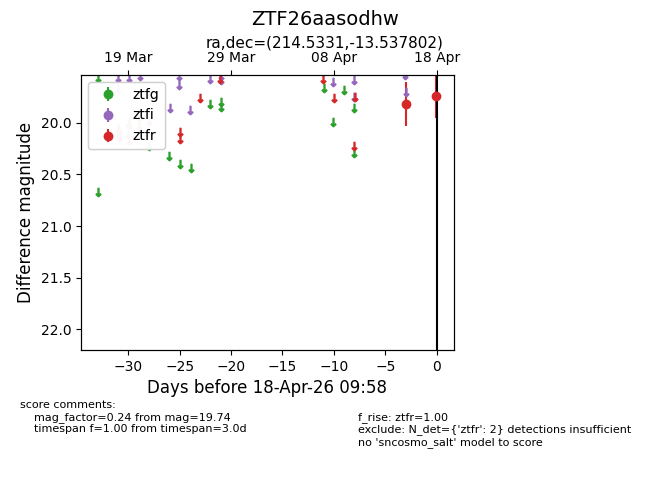
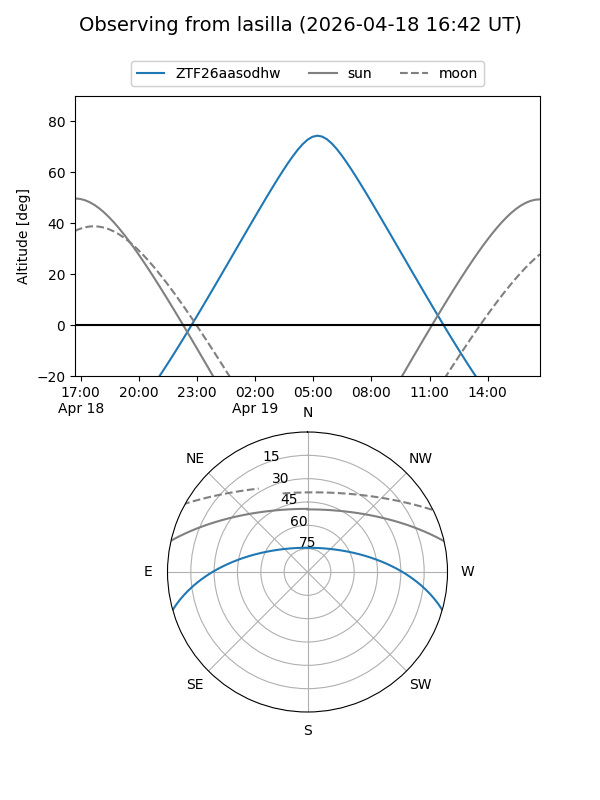
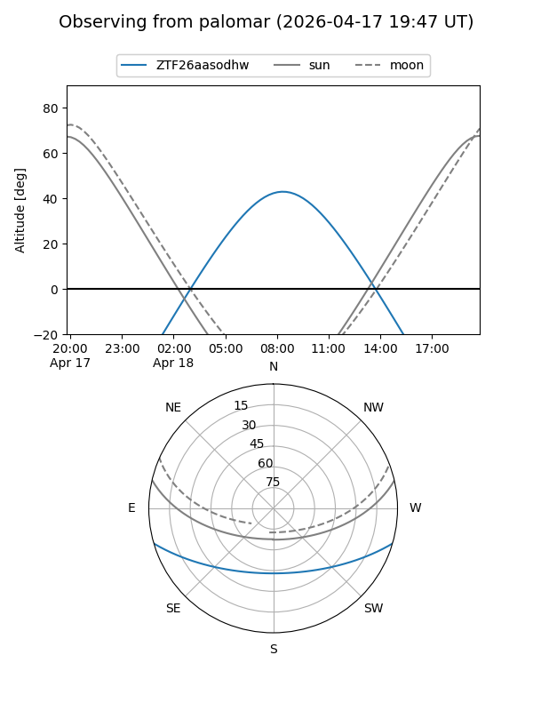

ZTF26aasodhw
Target ZTF26aasodhw at 2026-04-18 10:04
Aliases and brokers:
FINK: link
Lasair: link
ALeRCE: link
alt names
ZTF26aasodhw (ztf,fink_ztf)
Coordinates:
equatorial (ra, dec) = 214.5331,-13.53780
equatorial (HMS+DMS) = 14:18:07.95,-13:32:16.09
galactic (l, b) = (332.9958,+44.21468)
Flags:
Photometry:
last ztfr=19.74
2 ztfr detections
Lightcurve

Visibility


Additional plots